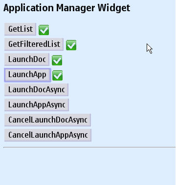
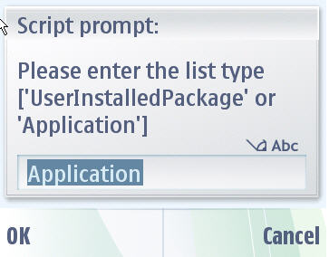
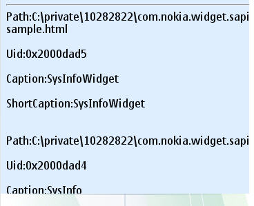
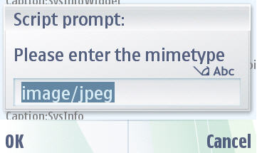
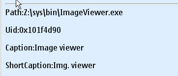
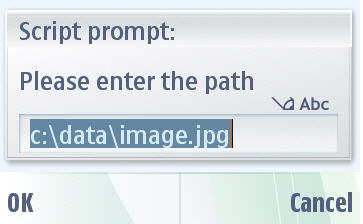
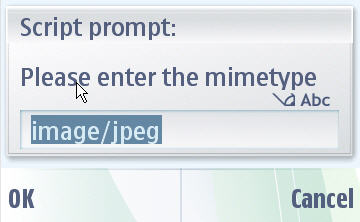
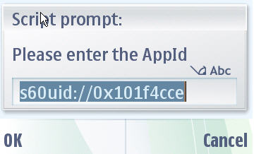

Application Manager Service API - Example Widget Documentation
This document describes the Application Manager Widget application for S60 5th Edition SDK. Target audience are developers who wants to develop application rapidly using application management functionalities.
Widgets are lightweight Web applications developed using the same well-known standards-based Web technologies – AJAX, CSS, HTML and JavaScript – used to create Web pages. Developers can use it as a reference and testers can use it to test the relevant functionality. This widget is intended for S60 5th Edition SDK. Developers should be able to develop professional applications.
Example Widget Application is designed to run on S60 5th Edition SDK. It is designed such that a developer takes it as a reference to create useful applications for any functionality supported on SDK. It will be designed to let the testers to test the functionality.
Example widget is not intended to give full featured implementation.
The example widget uses the WRT 1.0 API. The Web Runtime (WRT) environment supports the following Internet technology standards:
HTML 4.01
The basic HTML standards are supported.
XHTML 1.0
The basic XHTML standards are supported.
CSS Level 2 revision 1 (CSS 2.1)
JavaScript 1.5 (ECMA-262 3rd Edition)
The standard JavaScript features are supported. The WRT environment also provides some additional features that are mobile device specific.
The following additional JavaScript features are supported in the WRT environment:
Application Manager Service API enables the user to:
Following section lists the functional use cases taken as requirements:
1. Use the file - Open option to open the widget under <Installed-5th-Edition-SDK>\S60WidgetExamples\AppManagerWidget.wgz.
2. Go to Application folder and click on the AppManagerWidget to start. Once you start the widget, it will ask your application permission to access data and then start the application.

3.GetList: This API helps the user to do the following:
.Its range is “UserInstalledPackage”, ”Application. Enter valid range and it will display the list of application.


4. You can get Filterd list by providing MINE type. It will display filtered application using the specified type


5. LaunchDoc: Launches the application based on the given document. By providing valid path and document mime type, it will launch document. It supports launching in both modes depending on the application capability:


Note: But the Valid instance of IAppManager interface should be instantiated. In Asynchronous mode, it sends the notification when the launched application dies. In LaunchDoc either Document or MimeType should be present.
6. LaunchApp: Launches the application based on the UID. It supports launching in both modes depending on the application capability:
Developer gives valid UID of the application to launch the application. In Asynchronous mode, it sends the notification when the launched application dies.

Example Widget Application does not support internationalization